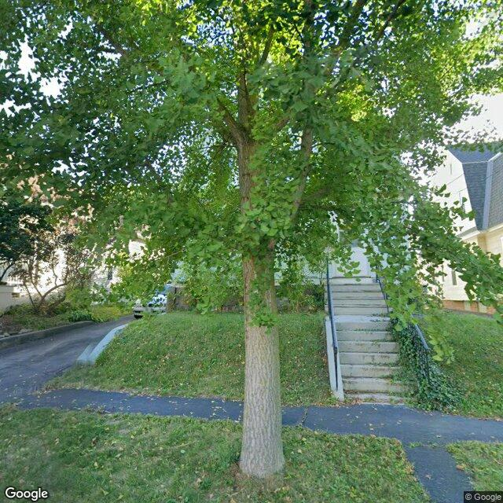

Property entry
149 Ross Pk
Published 2026-10-12T17:03:02+00:00
Parcel key: 005-02-300

City records
Matches use parcel IDs or normalized property addresses. Nearby properties are not treated as matches. Records may include historical or closed cases; check each record's status and dates. Publication dates are not source-data dates.
Vacant properties 0
No matches stored for this feed. The feed or address matching may be incomplete; this is not confirmation that no records exist.
Records refreshed 2026-10-27.
Rental registry 1
- Latitude
- 43.07475722
- Longitude
- -76.14413157
- NeedsRR
- Yes
- ObjectId
- 2229
- PropertyAddress
- 149 Ross Pk
- RR_app_received
- 1753660800000
Records refreshed 2026-10-27.
Code violations 1
- Latitude
- 43.07475722
- Longitude
- -76.14413157
- Neighborhood
- Court-Woodlawn
- ObjectId
- 91200
- SBL
- 005.-02-30.0
- complaint_address
- 149 Ross Pk
Records refreshed 2026-10-27.
Unfit properties 0
No matches stored for this feed. The feed or address matching may be incomplete; this is not confirmation that no records exist.
Records refreshed 2026-10-27.
AI image observations (unverified)
These observations are generated from an image, not an inspection or an official code finding. No human verification is recorded here.
Image capture date: Not recorded. The entry publication date does not establish the age of the image.
Automated image description
{ "summary": "The property features a residential structure partially visible behind a large tree, with a concrete staircase leading up a grassy slope.", "property_type_guess": "single_family", "visible_conditions": [ "A large deciduous tree partially obscures the view of the property.", "A concrete sidewalk and a portion of an asphalt driveway are visible on the left.", "The front yard features a grassy slope.", "Concrete stairs with a dark metal handrail lead up towards the main entrance of the house.", "Some climbing vegetation is present on the right side of the concrete stairs.", "Portions of a light-colored residential structure, including siding/facade, windows, and roofline, are visible behind the tree and at the top of the stairs." furlough", "condition_scores": { "roof": "fair", "siding_or_facade": "fair", "windows_doors": "fair", "porch_or_entry": "fair", "yard_or_lot": "fair", "trash_debris": "none_visible", "vegetation_overgrowth": "none_visible" }, "visible_flags": { "boarded_windows_or_doors": "no", "fire_damage_visible": "no", "structural_damage_visible": "no", "vacancy_signs_visible": "no", "active_construction_visible": "no" }, "possible_unrecorded_issues": [], "image_annotations": [], "needs_human_review": false, "confidence": "medium", "caveats": [ "The view of the property is significantly obstructed by a large tree, limiting a full assessment of the structure's exterior.", "The image angle also limits visibility." ] }
Property type guess: unclear
Visible conditions
- No items reported.
Condition scores
No structured condition scores available.
Visible flags
No structured visible flags available.
Possible image-only flags
- No items reported.
AI review boxes
- No items reported.
Review reasons
- No items reported.
Image quality
- Available
- True
- Bytes
- 136250
- Needs Rerun
- False
ACS tract context
Census Tract 4; Onondaga County; New York
- Housing units
- 1534
- Median gross rent
- 130600
- Median household income
- 66250
- Poverty rate
- 27.6
- Renter-occupied share
- 71.7
- Total population
- 4042
- Vacancy rate
- 4.6
OpenStreetMap nearby
Nearby map data is temporarily unavailable. This does not mean there are no mapped features.